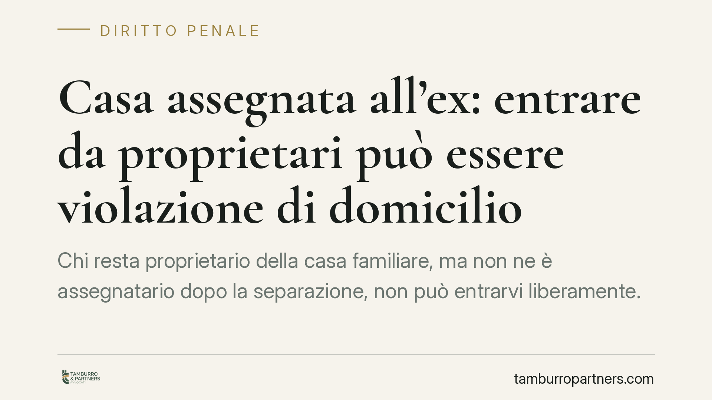

Casa assegnata all'ex: entrare da proprietari può essere violazione di domicilio
Chi resta proprietario della casa familiare, ma non ne è assegnatario dopo la separazione, non può entrarvi liberamente. La giurisprudenza è costante: usare le proprie chiavi in assenza dell'ex integra la violazione di domicilio. La proprietà, da sola, non basta a giustificare l'accesso. Un errore comune con conseguenze penali concrete.

Il fatto
Dopo la separazione, la casa familiare viene spesso assegnata a uno solo dei coniugi, di regola quello che convive con i figli. Accade però che l'immobile resti di proprietà (anche esclusiva) dell'altro. Da qui l'equivoco: molti ritengono di poter entrare nell'abitazione perché formalmente ne sono titolari.
La giurisprudenza penale smentisce questa convinzione. Il coniuge proprietario ma non assegnatario che accede alla casa familiare in assenza dell'ex, anche servendosi delle proprie chiavi, può rispondere di violazione di domicilio. La ragione è che il provvedimento di assegnazione sposta sull'assegnatario il potere di decidere chi può entrare.
Inquadramento normativo
L'articolo 337-sexies del Codice civile (introdotto dal D.Lgs. 154/2013, che ha riordinato la disciplina della filiazione) regola l'assegnazione della casa familiare. Il godimento dell'immobile viene attribuito tenendo conto prioritariamente dell'interesse dei figli. L'assegnazione non incide sulla proprietà, ma trasferisce all'assegnatario il diritto di godere dell'abitazione in via esclusiva.
Da questo discende il punto giuridicamente decisivo: lo ius excludendi, cioè il diritto di escludere altri dall'abitazione, si radica in capo all'assegnatario. È proprio questo diritto il bene tutelato dall'articolo 614 del Codice penale, che punisce chi si introduce nell'abitazione altrui contro la volontà, espressa o tacita, di chi ha il diritto di escluderlo. La Corte di Cassazione ha più volte confermato che il domicilio protetto dalla norma non coincide con la proprietà, ma con l'effettiva relazione di godimento e disponibilità del luogo (in questo senso l'orientamento consolidato della Sezione V penale).
Rileva inoltre la distinzione, sul piano penale, tra due fattispecie diverse:
- Articolo 392 c.p. (esercizio arbitrario delle proprie ragioni con violenza sulle cose): si applica quando il proprietario, per far valere un preteso diritto, forza serrature o danneggia beni per accedere.
- Articolo 393 c.p. (esercizio arbitrario con violenza alle persone): riguarda invece la coazione esercitata sulla persona.
Sono ipotesi da tenere distinte dalla violazione di domicilio: un accesso pacifico con le chiavi resta comunque punibile ex art. 614 c.p., mentre l'uso della forza può aggiungere ulteriori profili di responsabilità.
Implicazioni pratiche
Per il coniuge proprietario ma non assegnatario, le conseguenze sono concrete.
Le chiavi non contano. Possedere le chiavi non equivale ad avere il diritto di entrare. L'accesso senza consenso dell'assegnatario rimane illegittimo.
Il dissenso è tacito. Non serve un divieto esplicito. La giurisprudenza riconosce in modo costante che la volontà contraria del titolare dello ius excludendi può desumersi dalle circostanze: la separazione e l'assegnazione esclusiva rendono di per sé palese che l'ex non gradisce accessi non concordati.
La finalità non salva. Entrare per recuperare effetti personali, controllare lo stato dell'immobile o "verificare" qualcosa non rende lecito l'accesso. La finalità soggettiva, anche se percepita come legittima, non elimina il reato.
Possibile concorso di reati. Se l'ingresso avviene forzando la porta o danneggiando beni, alla violazione di domicilio possono aggiungersi il danneggiamento o l'esercizio arbitrario delle proprie ragioni.
Cosa fare in concreto
- Non entrare senza consenso scritto. Prima di ogni accesso, ottieni l'autorizzazione dell'assegnatario, meglio se documentata (messaggio, email, PEC).
- Recupera i beni personali per vie concordate. Fissa data e orario con l'ex o, in caso di rifiuto, chiedi al giudice l'autorizzazione al ritiro degli effetti personali.
- Documenta ogni comunicazione. Conserva le richieste inviate e le risposte ricevute: servono a dimostrare la correttezza del tuo comportamento.
- Non forzare mai serrature né sostituirle. Cambiare o forzare la serratura può aggravare la posizione con ulteriori reati.
- Rivolgiti a un legale prima di agire. In caso di contestazioni sull'immobile, la via corretta passa dal giudice, non dall'iniziativa autonoma.
In sintesi
Proprietà e diritto di accesso non coincidono. Dopo l'assegnazione della casa familiare, entrare senza consenso espone a responsabilità penale, a prescindere dalle chiavi e dalle buone intenzioni. La prudenza operativa e il ricorso alle vie legali restano l'unico percorso sicuro.
---
*Contributo informativo a cura di Tamburro & Partners Avvocati - Avv. Giuseppe Tamburro. Non costituisce parere legale.*
Ogni condominio ha una storia a sé.
Se gestisci un'amministrazione e vuoi un confronto su una specifica questione condominiale, scrivi allo studio. Ti rispondiamo entro un giorno lavorativo.